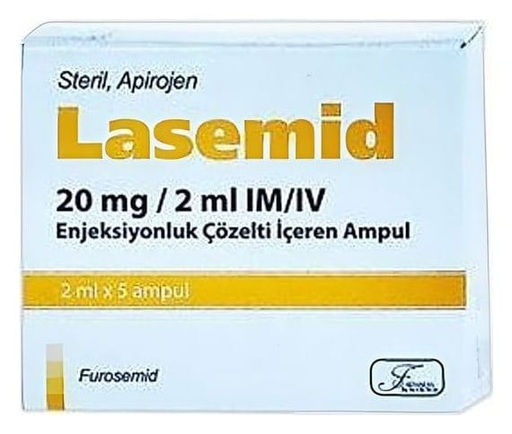

Lasemid 20 mg/2 ml IM/IV Enjeksiyonluk Çözelti İçeren Ampul, 5 Adet

Ne için kullanılır
KT · Bölüm 1LASEMİD, kas veya damar içine uygulanan, 20 mg furosemid etkin maddesini içeren 2 m l’lik ampul formundadır. 5 ampul içeren ambalajlarda kullanıma sunulmuştur. 1/11
LASEMİD idrar söktürücü (diüretik) adı verilen bir ilaç grubuna dâhildir. Diüretikler böbreklerden idrarın atılım hızını arttıran ve aynı zamanda su ve tuz kaybı yapan ilaçlardır. Vücutta bulunan aşırı suyun atılmasına yardımcı olmak için veya yüksek tansiyon tedavisinde kullanılır. LASEMİD güçlü bir idrar söktürücüdür. Doktorunuz size LASEMİD’i aşağıdaki nedenlerden biri veya birkaçı dolayısıyla reçetelemiş olabilir: • Süregelen kalp yetersizliğine bağlı olarak solunum yetmezliği, ödem, karaciğerde büyüme ile belirgin hastalığınız ile bağıntılı fazla sıvının atılmaması nedeniyle vücutta aşırı miktarda sıvı tutulması durumu • Süregelen böbrek yetersizliği ile bağıntılı fazla sıvının atılmaması nedeniyle vücutta aşırı miktarda sıvı tutulması durumu • Hamilelik ve yanıklara bağlı olan dâhil, akut böbrek yetersizliğinde sıvı atılımının devam ettirilmesi • Böbreklerdeki bulgu ve belirtiler ile bağıntılı fazla sıvının atılmaması nedeniyle vücutta aşırı miktarda sıvı tutulması durumu (eğer idrar söktürücü tedavi gerekiyorsa) • Karaciğer hastalığı ile bağlantılı fazla sıvının atılmaması nedeniyle vücutta aşırı miktarda sıvı tutulması durumu (eğer aldosteron antagonistleri ile tedavinin desteklenmesi gerekiyorsa) • Yüksek tansiyon • Yüksek tansiyonun sebep olduğu kriz durumu (destekleyici önlem olarak) • Vücuttan idrar atılımının zorlanmasının gerektiği durumlarda (örneğin zehirlenmelerde) destek olarak